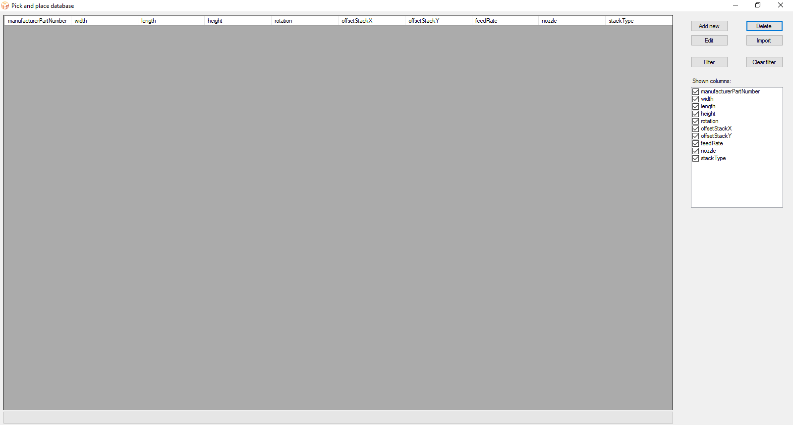

Managing the footprints database
Using FootprintManager.exe

When you start this program it automatically loads the database. On the right you have 6 buttons:
-
Add new: Adds a new footprint to the database, more info.
-
Delete: Removes the selected footprint from the database.
-
Edit: Edit the selected footprint, more info.
-
Import: You can import footprints from an other database. If you click on the button the program will
ask you to select the database to import from.All footprints in the other database that have a manufacturer
part number that is not in yours will be copied to your database.
Note: This operation can take some time. You can follow the progress in the bottom.
-
Filter: Filter the displayed footprints. A pop-up window will show up.
-
Clear filter: Clear the current filter.
You can also choose which columns to show and which to hide by enabling or disabling them on the right.
Using SQlite
The database is made with DB Browser for SQLite (recommended).
There is also an add-on version for
firefox.
The database is located under the same folder as the program and is called pnpFootprints.db.
DB Browser for SQLite gives you access to the complete database. Be careful that you don't break it.